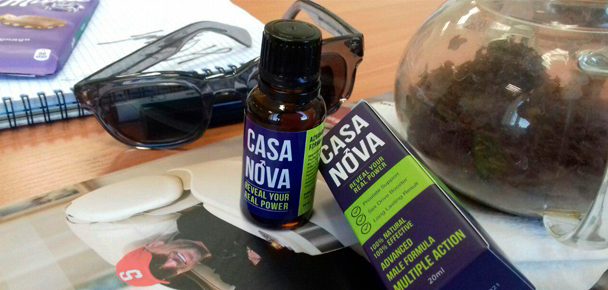

8 ani de impotență SOLUȚIA problemele într-o săptămână
Mâine fac 50 de ani, iar cel mai bun cadou pentru jubileul meu mi l-am făcut deja!
Vă povestesc pe rând. Cu 8 ani în urmă am făcut un accident. Mașina îmi era distrusă, iar eu am stat pe patul de spital jumătate de an. Am avut norocul să rămân în viață.
După asta au îceput problemele cu potența. Soția vrea sex - eu însă nu pot. Aș vrea, dar penisul nu mă ascultă. Nu se ridică. Și cum să procedez acum?
Am mers la urolog. Am făcut toate analizele, medicul mi-a analizat minuțios penisul. A spus că problema este la nivel psihologic.
Am mers la psihoterapeut mai mult de jumatate de an. dar penisul meu NU A ÎNCEPUT SĂ FUNCȚIONEZE!
Soția, un timp îndelungat nu credea că problema este atât e gravă. Mă seducea - mergea topless prin casă și îmbrăca lenjerie intimă de la care orice bărbat s-ar excita. Însă penisul meu era lăsat în continuare. Eram atât de nervos din cauză asta! Mă simțeam neajutorat și jalnic, Oare am devenit impotent?
Nu ne-am lăsat bătuți. Am cumpărat jumătate de sex-shop, am încercat poziții noi din Kama sutra. Am început să o mângâi peste tot - am legat-o, am sufocat-o și am lovit-o cu biciul... Ea gemea de plăcere și striga de durere, dar penisul meu rămânea moale.
Nu mă mai simțeam bărbat! Nu vroiam să merg la serviciu și nici chiar să mă trezesc dimineața. Am devenit dur cu soția, mi-am înrăutățit relația cu mulți parteneri de afacere. Viața și-a pierdut sensul.
Această criză nu a durat un singur an, ci a continuat 8! Îi sunt recunoscător soției pentru că nu m-a părăsit în acele momente dificile. Cu câteva luni în urmă am citit într-un jurnal pentru bărbați despre picăturile
Sunt absolut naturale. Conțin ciupearca Phallus Impudicus, care poate fi întâlnit la multe produse pentru potență. Mai conține multe alte extracte naturale și afrodisiaci puternici.
Soția a fost flatată de recenziile pozitive de pe site și am comandat aceste picături Am început să beau și să fixez toate schimbările.
A 3-a ziS-a îmbunătățit dispoziția. Am devenit mai energic. Mi-am luat abonament la sală.
A 5-a ziToată ziua în cap îmi vin gândurile perverse. În stradă mi-am țintit privirea la sânii și fundurile femeilor. Acasă am pus porno și m-am excitat rapid. Penisul meu nu era foarte tare, dar s-a ridicat! M-am masturbat și am terminat. A fost un progres!
A 6-a zi M-am trezit de la erecția de dimineață. Am apucat penisul cu mâna - mult mai tare și mai mare decât ieri. Am crezut că s-a umflat după masturbare. L-am măsurat: + 0,5 cm lungime și +0,3 în diametru.
A 7-a zi3:38 dimineața. Soția doarme, iar penisul meu stă ca un stâlp. Nu puteam să adorm. I l-am băgat și am început să o fut. Ea a zâmbit doar, am simțit că umedă... La început mă mișcam lent, apoi mai intens. Am pus-o în poziția de rac și am făcut sex cam 10 min așa. După ea s-a suit pe mine și sărit pe penisul meu tot cam atât. Îmi era frică să nu se înmoaie sau să cadă penisul, dar erecția era nebună. Soția a terminat prima, eu după ea.
O să țin minte pentru totdeauna acest orgasm! Puternic și îndelungat - de parcă am fost electrocutat. Am strigat chiar. Sperma a stropit tot în jur - patul, podeaua, soția...
În acea zi m-am simțit în sfârșit bărbat! S-a întors încrederea, dispoziție este bună, îmi ador soția!
Beau deja o lună În acest timp penisul meu a devenit mai mare cu 2,5 cm în lungime și +0,6 în diametru. Nu m-am așteptat la un asemenea rezultat!
Cu aceste picături chiar și cel mai obișnuit sex este nemaipomenit de plăcut! Nu mai avem nevoie de jucării și poziții perverse.
Chiar și creierul lucrează mai bine acum.Am semnat câteva contracte avantajoase - afacerea progresează. Iată ce înseamnă sex regulat!
O erecție tare - iată care este fericirea bărbaților.
Liliana
Cadoul într-adevăr este minunat. Soția la sigur este împlinită! Felicitări
| comentarii
Matei
8 ani fără sex... Men, cum ai trăit așa?
| comentarii
Petru
- este puterea! Cunosc din propria experiență.
| comentarii
Liviu
Rezultatul este impresionant. Am încercat multe creme și unguente pentru mărire, dar penisul doar se inflama puțin, iar mai apoi se făcea la loc. Aceste picături vreau să le încerc
| comentarii
Adela
Nu cred că aș fi rezistat în locul soției lui. Femeia este în floarea vârstei. Tânără și atât de mult timp fără sex. Ai grijă de ea!
| comentarii
Mihai
Și eu voi încerca Vreau să îmi măresc cu câțiva centimetri penisul. Dacă îmi va reuși e super!
| comentarii